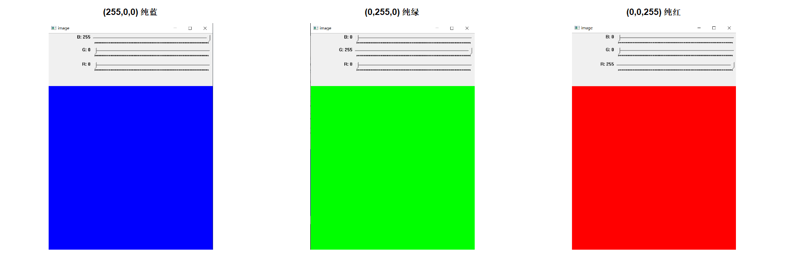
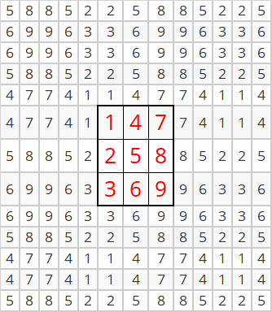

ROpenCV — R与OpenCV之间的桥梁 — 之基础教程
2026-11-02
前言
这几年，大学生创新实践中心的同学时不时会讨论图像处理方面的问题，我也爱跟着一起讨论并尝试做一些实验。我个人很喜欢R，但很可惜的是R目前封装的关于图像处理的工具包功能很有限，这让我不得不时而用matlab，或时而Python，或时而用Visual Studio集成开发环境来做实验，感觉很不顺手。
在去年年底，我突然间坚定了要在R中使用OpenCV各种功能的想法，打算自己实现一个连接R和OpenCV的桥梁——称之为ROpenCV，并为此做了初步尝试，发现效果还不错，也就不断坚持到了现在，且因此积攒下了一些资料。比如实现通过滑动条对蓝、绿、红三种颜色分量的合成控制，进而形成一个调色板功能。
#实现滑动条滑块拖动时的响应函数
colPallete <- function(val, param){
#获取蓝色滑动条的刻度值，作为蓝色分量b
b = cv_getTrackbarPos('B','image')
#获取绿色滑动条的刻度值，作为绿色分量g
g = cv_getTrackbarPos('G','image')
#获取红色滑动条的刻度值，作为红色分量r
r = cv_getTrackbarPos('R','image')
#生成512行512列的8位无符号3通道图像img，所有像素值都为(b,g,r)
img = Mat(512,512,CV_8UC3,c(b,g,r))
#将img图像显示在标题为image的图形窗口上
cv_imshow('image',img)
}
#生成标题为image的图形窗口
cv_namedWindow('image')## NULL#在标题为image的图形窗口上生成名为B、G、R的滑动条，最小值都为0，最大值都为255，
#滑动条拖动的相应函数都为colPallete
#B、G、R滑动条的刻度分别代表蓝色、绿色和红色分量值
cv_createTrackbar("B",'image',0,255,colPallete)## [1] 1## [1] 1## [1] 1## NULL在拖动滑动条改变颜色分量时，可以看到相应的蓝、绿、红三种颜色的合成效果：
当只有一个颜色分量为255，其余两个颜色分量都为0时，可以得到纯色效果，比如(255,0,0)对应着纯蓝、(0,255,0)对应着纯绿，而(0,0,255)对应着纯红（见下图）。

又比如，OpenCV的cvtColor函数可以实现图像从BGR颜色空间到HSV颜色空间的转换，而通过如下代码则可以快速查看BGR中的纯蓝(255,0,0)映射到HSV颜色空间后的色彩值为(120,255,255)。
#生成只含一个像素的OpenCV图像矩阵img
img= Mat(1,1,CV_8UC3)
#将像素值设定为纯蓝色（[ 是 1 起始，不是 OpenCV 的 0）
img[1,1] = c(255,0,0)
#将img的颜色空间从BGR转为HSV，结果保存在res中
res = cv_cvtColor(img,COLOR_BGR2HSV)
#查看像素的值，结果表明：
#BGR颜色空间中的蓝色映射到HSV颜色空间后为c(120,255,255)，
#即H分量为120，S和V分量都为255
as_array(res, numeric = TRUE)## , , 1
##
## [,1]
## [1,] 120
##
## , , 2
##
## [,1]
## [1,] 255
##
## , , 3
##
## [,1]
## [1,] 255
##
## attr(,"depth")
## [1] 0再比如，OpenCV中在进行诸如边缘检测等图像处理时，会首先扩展图像边缘，而扩展边缘的方式包括BORDER_CONSTANT、BORDER_REPLICATE、BORDER_REFLECT等9种，尽管OpenCV的帮助文档也说明了每种方式的边缘扩展效果，但还是希望能够在R语言中直接观察到相应效果（如下代码展示了BORDER_REFLECT边缘扩展情况）。
#生成3行3列的矩阵img_mat
img_mat = matrix(1:9,nr=3,nc=3)
#通过r2cv函数将img_mat转变为OpenCV图像矩阵img
img = Mat(3,3,CV_8UC1)
img[] = img_mat
#设定图像上、下、左、右四侧需要扩展的像素个数
sz = 5
#扩展图像边缘，扩展结果存入img_borderadded
img_borderadded = cv_copyMakeBorder(img,sz,sz,sz,sz,BORDER_REFLECT)
#取出img_borderadded的像素值，存入img_borderadded_mat
img_borderadded_mat = as_array(img_borderadded, numeric = TRUE)
img_borderadded_mat
本书中有很多这样的例子，这里就不再枚举了。总之，于我而言，能够在R中使用OpenCV做各种图像处理实验，是一件令人开心的事情。
原本打算再积累一阵子才成书的，但一则有感于很多学习R的同学因不能在R中完成图像处理实验而不得不倒腾切换各种工具的窘况，二则有感于个人力量难以高效率、高质量完成OpenCV函数的封装，所以想以此书抛砖引玉，吸引R中众多有志于图像处理的用户一起完成ROpenCV的搭建和扩展工作。
此外，这几年我总是不断吆喝中心的同学加强积累，冷静思考之后发现自己好像只是一个吆喝者而已，而不是一个践行者。这里也以此书，向中心的同学表明我不仅仅是吆喝而已，也在尽力跑着。
## R version 4.6.0 (2026-04-24 ucrt)
## Platform: x86_64-w64-mingw32/x64
## Running under: Windows 11 x64 (build 26200)
##
## Matrix products: default
## LAPACK version 3.12.1
##
## locale:
## [1] LC_COLLATE=Chinese (Simplified)_China.utf8
## [2] LC_CTYPE=Chinese (Simplified)_China.utf8
## [3] LC_MONETARY=Chinese (Simplified)_China.utf8
## [4] LC_NUMERIC=C
## [5] LC_TIME=Chinese (Simplified)_China.utf8
##
## time zone: Asia/Shanghai
## tzcode source: internal
##
## attached base packages:
## [1] stats graphics grDevices utils datasets
## [6] methods base
##
## other attached packages:
## [1] ROpenCV_0.0.2
##
## loaded via a namespace (and not attached):
## [1] digest_0.6.39 R6_2.6.1 bookdown_0.48
## [4] fastmap_1.2.0 xfun_0.62 cachem_1.1.0
## [7] knitr_1.52 htmltools_0.5.9 rmarkdown_2.32
## [10] lifecycle_1.0.5 cli_3.6.6 sass_0.4.10
## [13] jquerylib_0.1.4 compiler_4.6.0 rstudioapi_0.19.0
## [16] tools_4.6.0 evaluate_1.0.5 bslib_0.12.0
## [19] Rcpp_1.1.2 yaml_2.3.12 otel_0.2.0
## [22] jsonlite_2.0.0 rlang_1.3.0